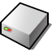

Passwords
What Kosmos remembers, so nothing is typed twice: a list of it, each entry with what it is and where it is used, and a delete that says what follows. And under it the keyring, a server that hands each secret only to what signs in with it. Drawn on 6 October 2026 for Diego to change. Nothing here is built.
“that would be better so i dont have to type the password all the time but at the same time i have a simple keyring app that allows me to delete passwords i no longer want kept” - Diego, 6 October 2026
Forget the password for diego on diego-mac?
Projects and Music stay open until they are disconnected or the machine stops. The next sign-in to smb://192.168.1.38 will ask for the password, and they will no longer be connected when Kosmos starts.
This cannot be undone. The Mac’s own account is not changed.

Passwords is locked
Enter the keyring password to see and change what this machine remembers.
What is drawn
- Passwords. Kinds down the side, the list with its search and sort in the middle, the entry on the right - macOS’s shape in Kosmos’s look. Click a row, type in Search and change the sort: the drawing answers. The secret is dots, with a sentence saying what is kept; there is no Show. Where it is used says who - smbfs - when and how often, which shares and whether they connect at start. Notes are Diego’s own. Sign in again… is how a changed password is changed; Delete… asks first.
- Delete… The confirmation says what follows - what stays open, what will be asked next time, that the Mac’s account is untouched - rather than only “Are you sure?”.
- Remember. Connect to Server’s switch, real now and on by default, with what it keeps said beside it. Nothing is remembered until the Mac has accepted the password.
- Remembered. The next time, the server answers and the name and password fields are gone: “Remembered: signs in as diego”, with Use another account… beside it. Tracker’s Network group marks a remembered server with a key.
- Locked, later. What macOS’s lock screen would be here - drawn so it can be said no to. Not in the first version: Diego chose nothing typed at boot.
Home Wi-Fi is drawn ahead. Kosmos has no Wi-Fi yet; the entry shows what a kind that keeps a real password looks like, and why it, unlike a share, could one day be shown.
Who can reach what
The keyring decides by which door a request came through, never by what the asker calls itself - the kernel’s
SYS_SENDER names a process by what it said, and a program can say anything (docs/keyring.md, Who is asking).
| Door | Held by | May |
|---|---|---|
smb | smbfs, from init, and nothing else | get, put, list and forget shares’ entries - no other kind |
manage | Passwords, from /Kosmos/Apps only; the launchers, to pass it on | list without secrets, forget, edit a title and notes |
diskfs’s /Keyring | the keyring alone | its two files; every program’s door reaches only /Home |
| none | every other program | nothing: no secret, no list, no delete |
What the key on the machine buys, and what it does not
Diego chose convenience knowingly, and the page says what it costs. The doors are the protection on a running
machine: no program can ask the keyring or read /Keyring. The encryption protects only where the key is
not beside the file: on a PC once the key is in the firmware (K8). Until then a lost stick, or QEMU’s disk image,
holds the keyring and its key together, and gives up both.
What is Diego’s to decide
1. Passwords or Keyring
Passwords: what a person looks for. The keyring is the server under it.
2. Doors, not names
A door each for smbfs and Passwords; needs keyring honoured only for a file in /Kosmos/Apps.
Yes, knowing that whatever runs inside a launcher holds manage too.
3. Where the key lives
On the disk behind diskfs’s door now; on a PC, in a UEFI variable the loader reads (K8), which carries 32 bytes through Nebula once.
The disk now, K8 after K7, on machines that boot through Kosmos’s loader.
4. The NT hash, not the password
The hash, as smbfs keeps it today: password-equivalent for NTLM, but the password itself nowhere here.
5. No Show in the first version
As drawn: a share’s password is not kept to be shown; other kinds only behind a lock.
6. AES-256-CCM through one door
CCM, the AEAD the Crypto Kit already holds to its vectors, rather than the ChaCha20-Poly1305 sharing.md named.
7. A remembered share is every program’s
Accept for now, as a connected share is today; a per-program /Network is per-launcher permissions’ job.
8. Connect when Kosmos starts
On when Remember is ticked, a switch in Connect to Server and in the entry.
9. A lock, at all
On the roadmap as an option, not built until it matters.